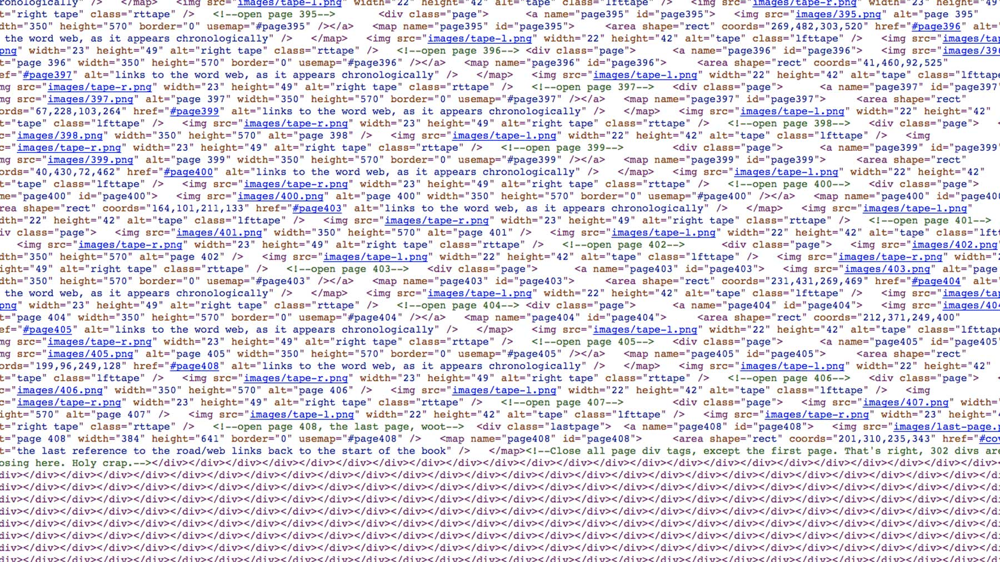
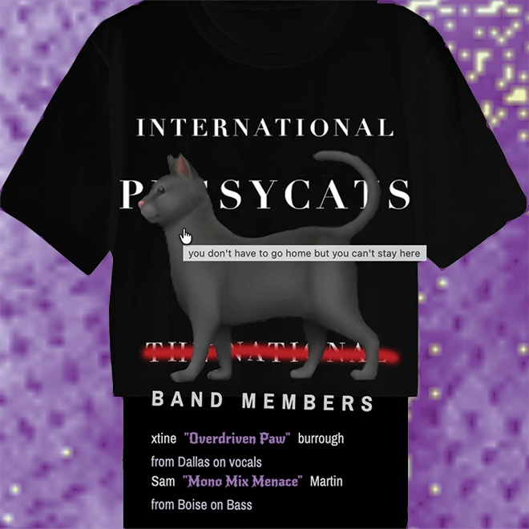
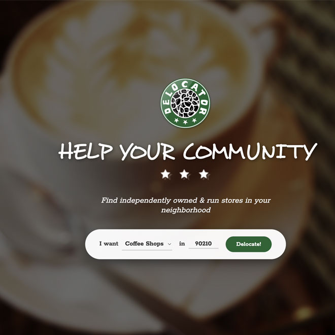
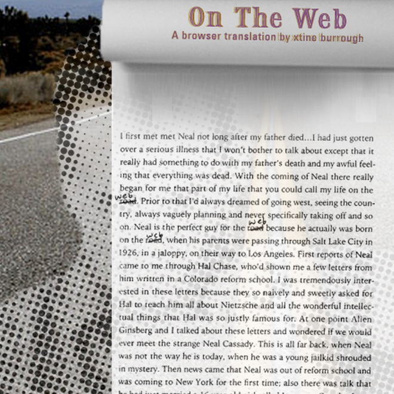
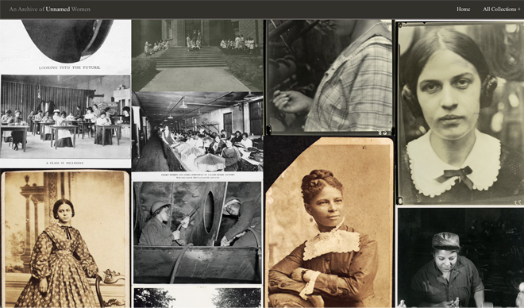

Forget DIY...This band is
Don't Do It At All!
THE INTERNATIONAL
PUSSYCATS is
inspired by Josie and the Pussycats (a cartoon I loved when I was a kid)
Did you ever want to be in a band but you don't know how to play an instrument? You don't have time? You don't feel Like hanging out with other musicians? Now you can join a punk band that never plays. This is the band for people who just want to be in a band.

v.1 2005 (with Vasna Sdeung); v2. 2006 (with Kyle Cummings); v.3 2009 (with Jim Bursch); v.4 2015 (with Tom Brickman); v.5 2026 (with Pragya Singh)
Delocator.net launched in 2005 so users could locate independently owned cafés. The Delocator is the opposite of an online retail store locator, which corporate store websites featured in 2005. At this time, websites were made by experts and only companies with funds for marketing and development had online representation. In 2006 book stores and movie theaters were added. In 2009 users could modify their entries. In 2015 the site saw integration with Google Maps. In 2026 Pragya Singh updated the back end to run on Vercel, and improved performance.
On The Web, 2011, TERMINAL Commission (Austin Peay State University)
While reading Jack Kerouac's On The Road, I crossed out every appearance of the word “road” in my copy of the book and replaced it with the word “web” to investigate whether modern life and web surfing are reflected in the original road-trip manuscript. In many cases, the work still speaks to wanderers hitchhiking on the open road or browsing the information superhighway. The visual and interactive design of the project is based on the original manuscript design style: the scroll. Each page was scanned and placed into the virtual scroll utilizing (new to 2011 features in) HTML5 and CSS3, enabling the user/reader to scroll through the text in a web browser. Readers can also skim the work for the word “web” integration into Kerouac's 1957 context by clicking on the last occurrence of the word on any page where it is found, or by tabbing through the scroll.
This is the second time On The Road was a muse for me. My last reading of the book resulted in a letterpress paper bag give-away that I conducted at City Lights Bookstore in 2007. One paper bag is now in the collection at The Letterform Archive.
An Archive of Unnamed Women
Republished Archive with Speculative Interpretation
Collaboration with Dr. Sabrina Starnaman (Professor of Literature) and 2018, v. 1 with Al Madireddy (Computer Science and Engineering BA, UTD 2018) and Alyssa Yates (archival studies and literature BA, UTD 2018); 2022, v.2 with code updates by Nicolas Nguyen (Business BA, UTD 2022).
A speculative remix that recovers photographs of unidentified women in digital photography collections. Visitors who search the site are presented with photographs of unnamed or uncited women. Upon clicking for more information, a description of womens' experiences, randomly drawn from a parallel collection of women's writing about women appear on top of the image. Who are these women? What were their experiences? We can only imagine, so we turned to literature to speculate. This project highlights a critical discussion about gendered power relations in archived visual materials that are saved as part of a digital object's metadata.
An Archive of Unnamed Women has been presented as a participatory workshop at venues including the Society for the Study of Literature, Science, and Art (SLSA) at UC Irvine, the International Gender and Sexuality Studies Conference at the University of Central Oklahoma, the Society for the Study of American Women Writers in Denver, and Digital Frontiers in Lawrence, Kansas. The project has been supported by a Nasher Sculpture Center Refereed Microgrant and a HEArts Award from The University of Texas at Dallas, and has also inspired ongoing student collaboration, including an undergraduate research redesign presented through UT Dallas's SPUR program.